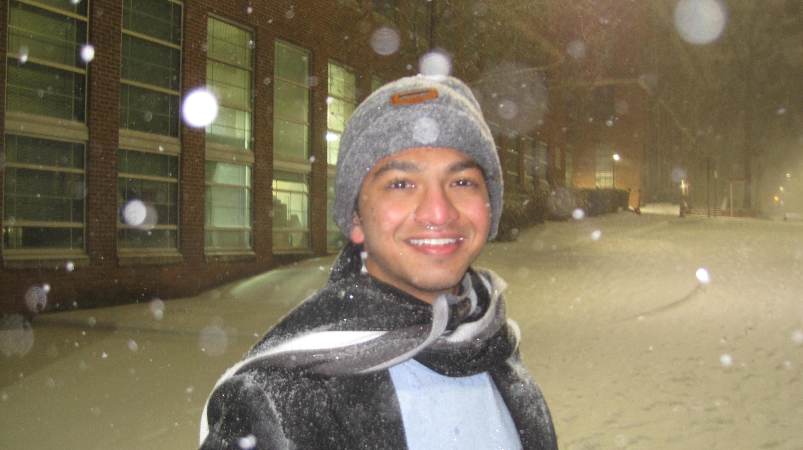

Computer Science & Mathematics
This was my first ever research project at NC state, and first research project ever! I began research in the Fall of 2024, with my research mentor Dr Radmila Sazdanovic, and decided to take her special topics course about the topic in Spring 2025. I stumbled into the course wildly underqualified, sitting amongst almost exclusively graduate students who were well versed in Topology - the field of study in question. Eventually, through consistent effort and countless hours, I produced this paper. The topic of this paper was the rho knot invariant, and the tool I used was BallMapper, a topological data analysis tool.
The race project was a part of my coursework for an honors seminar I took called Race, Membership, and Eugenics. The whole course was a great deep dive into several parts of the past and present, including the eugenics movement which I did not know anything about before this course. Our project in specific was about HBCUs. There were two parts of this project, one was a print piece about the significance of HBCUs in America, and the other was a video documentary about DEI at HBCUs. We interviewed two students at HBCUs as a part of this project, and those conversations were very revealing to me.
E102 was a course I had to take as an engineering first year, it was called Engineering in the 21st Century. This course was about the principals of engineering. It was my very first introduction to engineering, which I aim to make my career as I am about to graduate. Our project was about a compact diagnosis unit. This “CDU” allowed a person to walk into the door, have an xray, blood test, oximeter, and more tests taken of them. So in hindsight, this project was really bad and very unrealistic. But this project isn’t in the portfolio because of its quality, it’s in the portfolio as an homage to my humble beginnings as an engineer!
E101 allowed me to experience presentation skills in the real world. For FEDD we presented a chicken coop. We placed third within the chicken coop category. This project made me focus on my team building skills. Our project included an automated door that would open and close at night. This was also my very first experience with handy things like carpentry and electronics. One of our teammates had the bright idea to use a curtain motor that came with an app to open and close our door according to the time and also upon the owner’s discretion. Here is a video of the chicken coop door closing:
As a math major, this course is really close to my heart as a math major, and as someone who has loved math since I was in the 9th grade. It was my introduction to proofs, which are the very foundation of mathematics. This whole course was the first time my mind was forced to think of mathematics in a conceptual, abstract way instead of just knowing how to solve calculus questions for a test. As far as the portfolio itself goes, it was just 10 questions to practice writing proofs on, which after 4 years of writing proofs seems amateurish. That being said, I read through it while working on this project and I honestly don’t know if I could answer one or two of these questions.
Once again, this project is a trip down memory lane. It was my very first independent coding project ever. I’m using the word “Independent” a little loosely here. This project was done in pairs, although the pairs were only for ideation and both partners would have to submit their own independent code. However, the assignment itself was decided entirely by the students. The only instructions we had was “Make a CS project that uses every concept you’ve been taught in this class”. My partner and I chose to make the battleship game.
This project was the culmination of all my CS classes. This is the final class in the order of core CS classes. This project helped me with my social skills and team building skills, as I was put into a team with 4 other random students, with whom I worked for the length of a semester. I learned a lot about software development, like ideation, design, and even more intricate implementation skills like java and react. This project is called WolfCafe, and is an app for a coffee shop to keep track of ingredients, recipes, employees and customers. It also allows customers to place orders through the app. Out of all the projects I have created in CS classes, this is the one I am most proud of.
Last year was the first time I spent one of my summers in the United States. It was just me in my apartment, the climbing wall, and my job at COS IT (which I eventually got fired from) over the summer. I decided to add a member to the family, which was my electric guitar. I bought the guitar in May to rekindle my dormant passion for music, and also to have a hobby I could do at home. I spent hours pretty much every day of the whole summer playing the guitar, learning music theory, and practicing. During this time, I took a course called MUS160 - Guitar ensemble. This was far and wide one of my favorite classes at NC State. Although the class was targeted towards a slightly more beginner level guitarist than I had become by then, I still walked away from that class with a lot of knowledge and I think it really improved my guitar skills. My favorite part of this class was that the final was a performance. One of my performances was a rock medley based around Sweet Child o’ Mine, and the other was a large group cover of Billie Jean. It was my first time performing in front of so many people, and it felt awesome once I did. All my friends were there, cheering me on. It’s a memory I will never forget.
In August 2025, I was initiated as president of the table tennis club. Every semester we play the NCTTA regionals against other colleges like UNC, Duke, and some more. This is a really fun time for me, and one of the things I used to look forward to the most in the year even before I was president. The whole team drives down to Duke together early on a Saturday morning, socializes with the other teams, plays our matches, breaks for lunch and then comes back. However, it wasn’t just these tournaments that made the table tennis club special to me. Over a span of 2 years, which is how long I’ve been in the club, some of the regular members have become close friends of mine. We’ve attended each other's birthdays, graduations, and even thrown a farewell party for an exchange student who went back last semester. I am grateful I got to participate in college sports during my time at NC State, and even more for my amazing teammates.
This was my first trip with the Honors program, and I think I opened up a lot as a person because of it. This was a ski trip to boone, we did a lot of fun things like visiting a gem mine, a museum, and of course went skiing. We also went to a lot of cool restaurants, including one family owned restaurant that served soul food and only took cash. The food was definitely worth the hassle. It was also my first time skiing, and I was lucky that one of the other students on the trip volunteered to teach all of us beginners how to ski. The learning curve was steep, but eventually I got it. Rushing down sugar mountain at a speed that I knew I wouldn’t be able to control with the cold wind blowing in my face on a slope that was FAR too advanced for me is an adrenaline rush I dream about. Also, the next time I went skiing with my friends who had never gone skiing before, THEY were lucky enough that we had someone who knew how to ski :D.